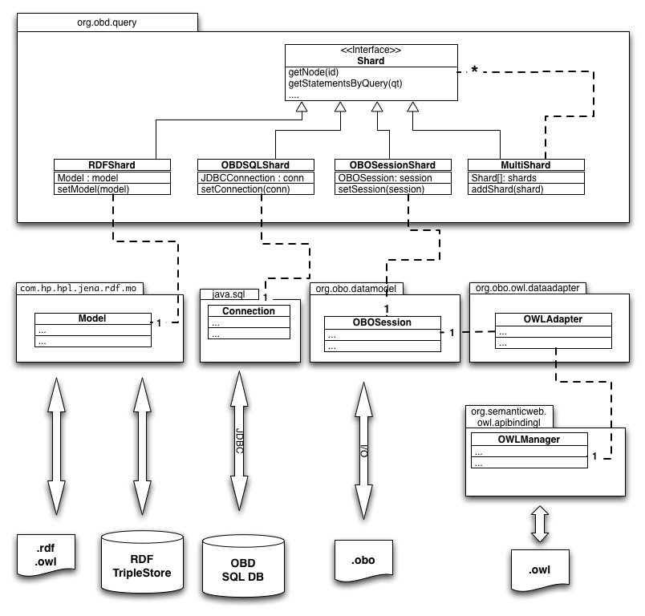

|
||||||||||
| PREV PACKAGE NEXT PACKAGE | FRAMES NO FRAMES | |||||||||
See:
Description
| Interface Summary | |
|---|---|
| Shard | Interface for accessing a repository/repositories of ontology-based annotations |
| Class Summary | |
|---|---|
| AnnotationLinkQueryTerm | A LinkQueryTerm in which the node is annotated to the target |
| AtomicQueryTerm | Leaf node in a query tree. |
| BooleanIntersectionQueryTerm | A BooleanQueryTerm in which the operator is AND |
| BooleanQueryTerm | A QueryTerm that performs a boolean operation over 1 or more sub-terms |
| CoAnnotatedQueryTerm | A LinkQueryTerm in which the link type is one of co-annotation |
| ComparisonQueryTerm | A QueryTerm comparing two values |
| CompositionalDescriptionQueryTerm | A QueryTerm for finding nodes that satisfy a CompositionalDescription |
| ExistentialQueryTerm | A QueryTerm that tests for the existence of some entity (ie NOT NULL) |
| GraphQuery | Deprecated. |
| LabelQueryTerm | A LiteralQueryTerm that matches based on some label of the entity |
| LinkQueryTerm | A QueryTerm that matches links connecting a node and a target
Example: anything that is part of something that develops from the imaginal disc
LinkStatementQueryTerm(partOf,
new LinkStatementQueryTerm(developsFrom,
new LiteralStatementQueryTerm(NAME, "imaginal disc"))) |
| LiteralQueryTerm | A QueryTerm matching a node that is related to a literal datatype value |
| NodeSetQueryTerm | A QueryTerm that performs a boolean operation over 1 or more sub-terms |
| QueryTerm | Base class for OBD query objects. |
| RootQueryTerm | A QueryTerm that matches any node that is not the target of a LinkStatement
by some relation |
| SourceQueryTerm | A QueryTerm that matches links or nodes with the specified source |
| SubsetQueryTerm | A LinkQueryTerm in which the relation is one of belonging to a subset |
| Translator | |
| TranslatorLexer | |
| TranslatorParser | |
| TranslatorParser.atom_return | |
| TranslatorParser.booleanElement_return | |
| TranslatorParser.booleanQuery_return | |
| TranslatorParser.boolOp_return | |
| TranslatorParser.linkQuery_return | |
| TranslatorParser.object_return | |
| TranslatorParser.predicate_return | |
| TranslatorParser.query_return | |
| Enum Summary | |
|---|---|
| BooleanQueryTerm.BooleanOperator | |
| ComparisonQueryTerm.Operator | predicate comparing two literal values |
| LabelQueryTerm.AliasType | relation between label and node |
| QueryTerm.Aspect | Determines how a nested query is joined |
| Shard.EntailmentUse | |
| Shard.GraphExpansionAlgorithm | |
Core OBD API and Query Objects
The core of the java API is a Shard. This provides methods
for accessing an OBD Shard (i.e. repository/instance). There can be multiple
implementations of a Shard. The two primary implementations are:
OBDSQLShard OBOSessionShard MultiShard
The shard object access provides means of accessing a shard through either
simple convenience methods, or via queries. Queries are constructed using
QueryTerm objects
The following diagram gives an overview of how access to different kinds of repositories is implemented. The diagram omits certain Abstract classes for brevity. Note that also the access method for OWL may change to a direct OWLAPI wrapper

The OBD API is generic and free of domain-specific knowledge or constructs. However, it is obviously geared towards annotation-centric use cases.
getAnnotationStatementsForNode(ClassId)
This returns all statements of the form R(E,X) where R’(X,ClassId) holds. More advanced query calls are possible for situations where the API user needs more control over relations, filtering, etc.
As well as canned API calls, the API user can create and manipulate query objects, and pass these to the shard/repository. These query objects are highly expressive and allow API user to ask for things such as: Annotations from source X with evidence E that are to size phenotypes affecting the heart or kidneys, or parts of these organs (note that of course neither the query model nor object model are cognizant of evidence, phenotypes and so on: this is expressed using classes and relations from ontologies)
As well as a java API, there is also a REST level API, developed using the RESTLET framework.
Another option is to access OBD via a SPARQL endpoint. The d2rq tool is used to map to RDF directly from the OBDSQL schema (see below).
There is also an OBOSession layer, which wraps org.obo objects – this is the same object model used by Phenote, and was originally developed for oboedit, and then extended to handle annotations. There is a bridge between this model and the Manchester OWLAPI (which will probably form the core of Protege4). This is how OBD handles import and export of annotations to OWL (required, for example, by the BIRN group).
Note that a single OBD shard/repository can wrap multiple persistence sources in a transparent fashion; the mediation strategy is still quite simple, so some query answers are incomplete when using this multishard strategy)
The persistence strategy has been designed such that it is simple to wrap existing bio-database schemas with the API. In addition, we anticipate wrapping RDF triplestores – the OBDAPI and query objects give a higher lever way to access annotations, SPARQL is too low level for this.
Standard reasoners can be used to pre-compute the deductive closure. Currently OBD uses its own simple forward chaining reasoner and this scales better with the kind of low expressivity (sub EL++) high volume annotations in OBD.
|
||||||||||
| PREV PACKAGE NEXT PACKAGE | FRAMES NO FRAMES | |||||||||